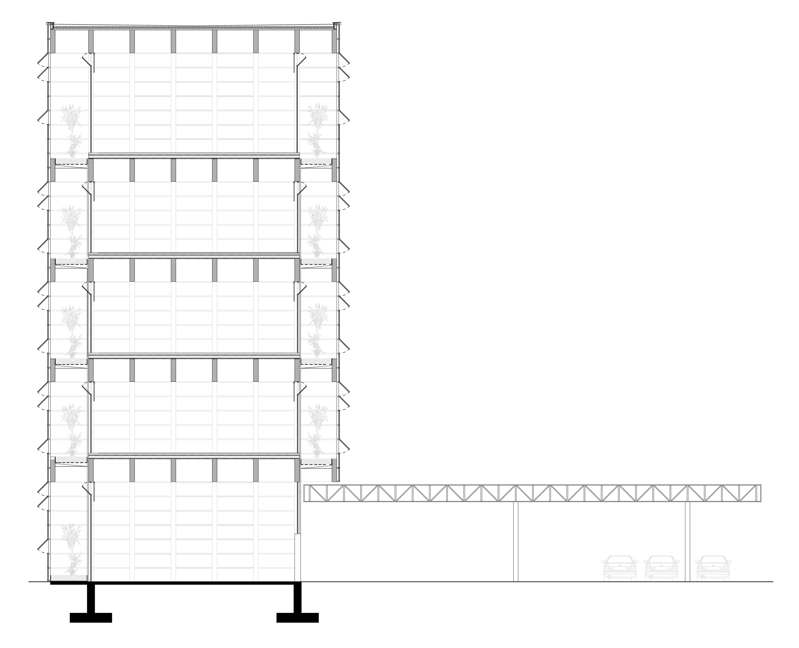
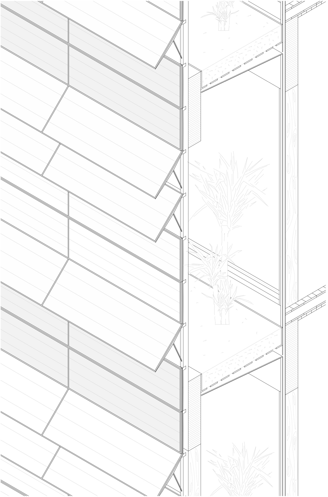
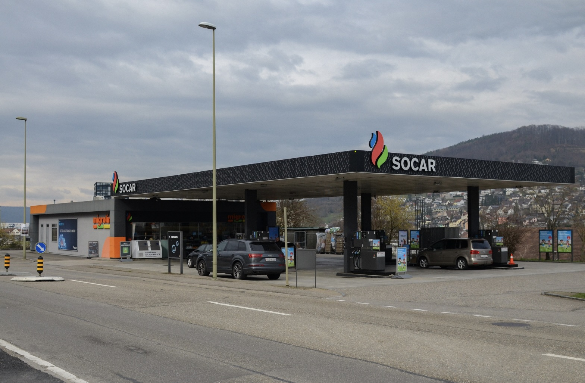
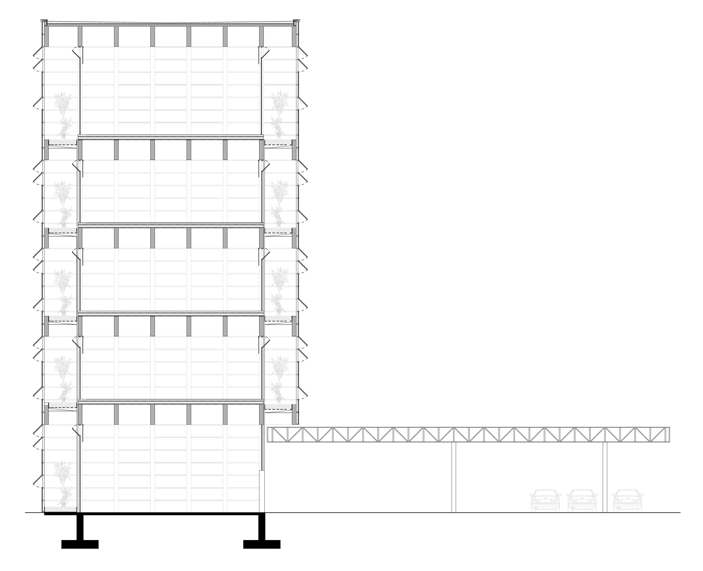
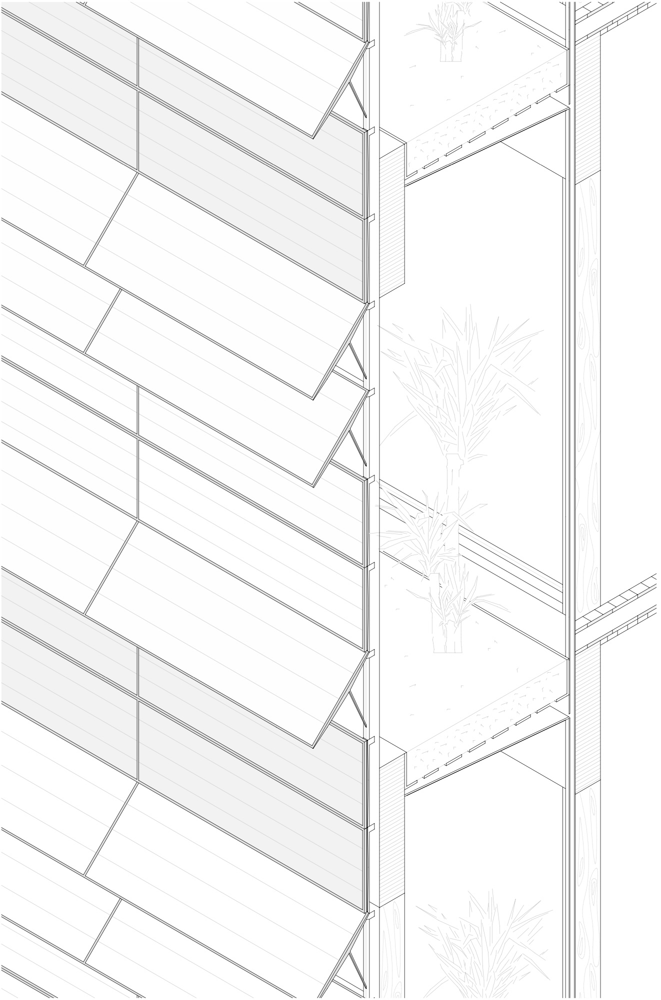
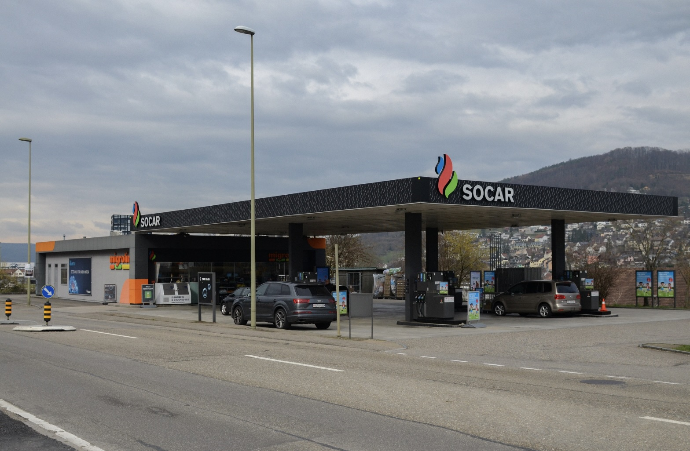

Gas stations, often seen as mere refueling points, have untapped potential to become vibrant social spaces. Leveraging their proximity to residential areas and distinctive architectural features like canopies and signage, this project reimagines gas stations as sports centers fostering community interaction.
The design transforms the canopy into a monumental entryway and introduces a timber-structured tower, accommodating diverse activities. The project incorporates natural ventilation, thermal buffering, and greenery to create sustainable spaces.
At ground leel, the tower extends the gas stations utility. ransitioning to an electric charging station prolongs visitor stays, encouraging interaction and community engagement.
This project envisions gas stations as dynamic public shelters, strengthening neighborhood connections and sering as a model for retrofitting similar spaces across the region.